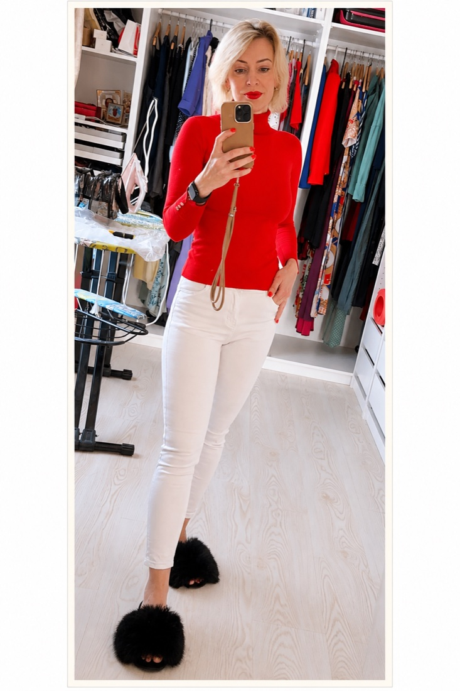

Настоящая еда
Простые продукты, понятная тарелка и удовольствие от вкуса. В дневнике — мой личный взгляд на кето и карнивор.
Кето. Карнивор. И жизнь, в которой
ты снова на своей стороне.




Я Алёна. Предприниматель, мама
и автор «Дневника Хищницы».
Мой путь к своему питанию был длинным. Диеты, возвращение веса, новые попытки. Сегодня кето и карнивор — часть моей повседневной жизни, о которой я рассказываю честно.
Я не врач. Я человек с личным опытом, любопытством к жизни и привычкой делать всё на совесть. Здесь делюсь своими наблюдениями и поддерживаю тех, кто ищет свой путь.
*Со слов Алёны. Личный результат не является обещанием или прогнозом для других людей.
Простые продукты, понятная тарелка и удовольствие от вкуса. В дневнике — мой личный взгляд на кето и карнивор.
Вопросы, сомнения и сложные дни — часть пути. Со мной можно говорить честно. Не нужно быть идеальной.
Личный опыт не заменяет медицинские знания. Изменения питания и вопросы здоровья обсуждаем с врачом.
Маленькие фрагменты большой жизни.
Продолжение — в моём дневнике.

Моя еда, мои привычки, мой каждый день.

Дом, близкие и то, что делает меня мной.
Без сахара,Ваша Хищница Алёна
без иллюзий,
но с большим
сердцем.
Если хочется разобраться в привычках
и не оставаться с вопросами один на один.
Знакомимся с вашим ритмом жизни, обсуждаем привычки и повседневное меню. Я рядом с поддержкой и ответами на вопросы.
Общение о кето и карниворе, общий ритм и поддержка в чате. Для тех, кому интереснее разбираться вместе.
Стоимость и условия обсуждаем лично до начала работы. Я консультант по образу жизни: не ставлю диагнозы, не назначаю лечение и не отменяю лекарства.
Загляните в мой дневник или напишите мне в Telegram. Расскажите о своём запросе и ожиданиях — обсудим, какой формат может вам подойти.
Нет. Я консультант по образу жизни и делюсь личным опытом. Диагностика, интерпретация анализов и лечение относятся к компетенции врача.
На действующей странице указан срок от одного месяца. Продолжительность, объём поддержки и стоимость согласуем до начала работы.
Сначала обсудите изменения питания с лечащим врачом. Кето и карнивор подходят не всем. Самостоятельно менять назначенное лечение не нужно; сопровождение его не заменяет.
Нет. Моя история — личный опыт, а не гарантия. Реакция на питание индивидуальна; обещать определённый вес или улучшение здоровья было бы нечестно.
Заходите. Здесь не кусаются.
Ну, почти.